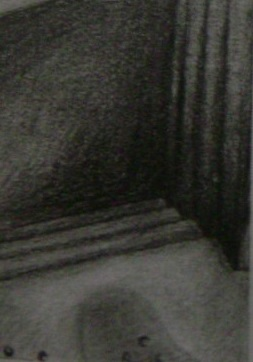

Her macerada mutlaka bir miktar tehlike vardır. Maceraları, heyecanlı ve çekici kılan tehlikedir. İnsanlar aynı heyecanı fiziksel tehlike riski olmadan yaşamak için yüklü paralar ödemeye hazırdır. Hortlaklı ev gezileri ve paraşütsüz dalış okullarının iş yapıyor olmasının nedeni insan doğasındaki bu özelliktir. Riskle yüzleşme arzusu hepimizin içinde vardır. Hatta tehlike ile yüzleşmenin dayanılmaz cazibesi bazı insanlarda öyle büyük bir tutku haline gelir ki yeni bir dünya arayışı ya da bir gizemi çözmek uğruna hayatları ile kumar oynayan insanlar vardır. Hepimiz korku filmindeki kahraman karanlık kapının eşiğinden geçecekken "Dur girme oraya! Sen deli misin?" diye bağırmak istemişizdir. O kişi siz olsanız ne yapardınız? Şimdiki senaryomuz bizi basit korkularla gerçek korkunun arasındaki ince çizginin bulanıklaştığı karanlık bir dünyaya götürecek.
1. Yıllardır kimsenin ayak basmadığı eski bir binadasınız ve yerin altına doğru inen bir merdiven keşfettiniz. Aşağıya doğru inmeye başladınız. Bir...
iki... üç... Kaç basamak indiniz?
2. Derken karanlığın içinden birinin sesini duydunuz. Bu kişi yavaşça ağlıyor mu? inliyor mu? Yoksa sizinle konuşuyor mu?
3. Bu kişinin sesini duyunca nasıl tepki veriyorsunuz? Sesin kaynağını bulmaya mı çalışıyorsunuz? İlk düşünceniz arkanıza bile bakmadan yukarıya koşup kaçmak mı? Yoksa korkudan olduğunuz yerde donup kaldınız mı?
4. Aşağıdaki kişi şimdi size adınızla sesleniyor ve yukarıdaki kapıdan gelen ışıkta birisinin aşağıya doğru indiğini görüyorsunuz. Aşağıya gelen kimdir? Tanıdığınız birini seçiniz.
